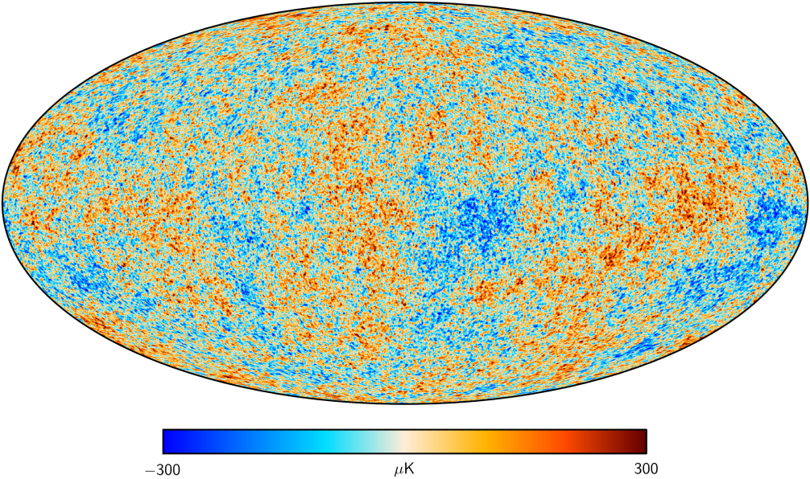
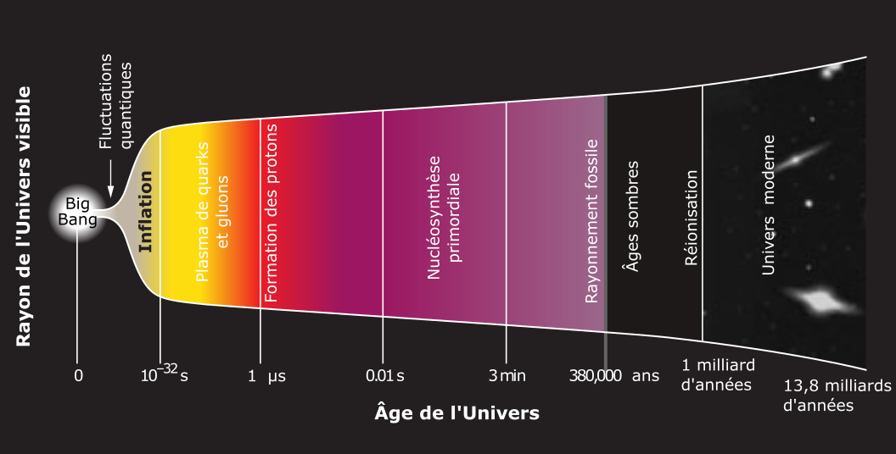

Cosmologie
CEA Explorer et comprendre l’Univers
4 décembre 2020
- Rayonnement diffus cosmologique
- Brève histoire de l’Univers
- Fin de l’Univers
Rayonnement diffus cosmologique
NASA, ESA, STScI
Rembobiner l’histoire de l’Univers
pollosaurio CC BY 2.0
Rembobiner l’histoire de l’Univers
- L’Univers est en expansion
- Dans le passé il se contractait
- Il était plus dense et plus chaud
- On devrait encore pouvoir voir le jeune Univers chaud si on regarde assez loin
Rayonnement fossile
- Provient de toutes les directions
- Rayonnement micro-ondes
- A la même température partout
- Lumière qui provient du tout début de l’Univers
Rayonnement fossile
- Observé pour la première fois par Penzias et Wilson en 1965
- Cartographié par COBE (1989), WMAP (2001) et Planck (2009)

ESA et la Collaboration Planck
Brève histoire de l’Univers
NASA, ESA, STScI

Adapté d’une image de la collaboration BICEP2
Fin de l’Univers
NASA, ESA, STScI